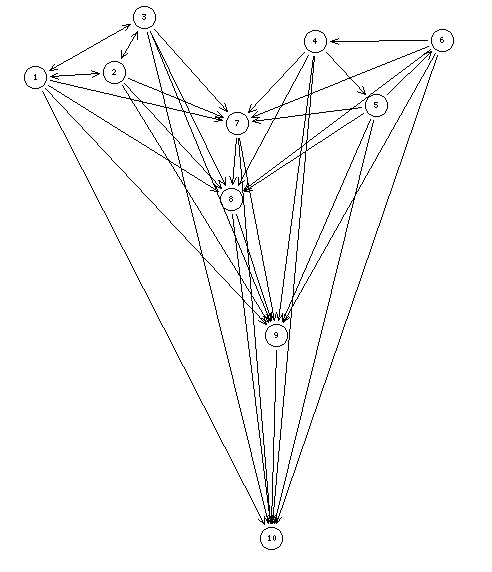

K3-C3 headed ordering disqualifying the outranking kernel concept as best choice recommendation
{0,1}-valued digraph
Hyperkernel approach motivation
A = {1,2,3,4,5,6,7,8,9,10}, L = {0,1}

If the tricycle {4,5,6} is transitively closed , we are in the presence of a preorder with two initial equivalences classe: {1,2,3} aand {4,5,6}, which represent the evident and unique possible best choice recommendation.
Due to the presence of the intransitive tricycle {4,5,6} at the beginning of the preorder, the given digraph does not accept any dominant kernel. This fact definitely eliminates the dominant kernel concept as a direct candidate for the best choice recommendation.
To overcome this drawback, it is possible to enlarge the digraph with all possible minimal odd circuits. Here we may add the C3:'_4_5_6' to the set of minimal 'single' choices. We thus obtain three equivalent dominant hyperkernels: {1,_4_5_6_}, {2,_4_5_6_}, and {3,_4_5_6_}.